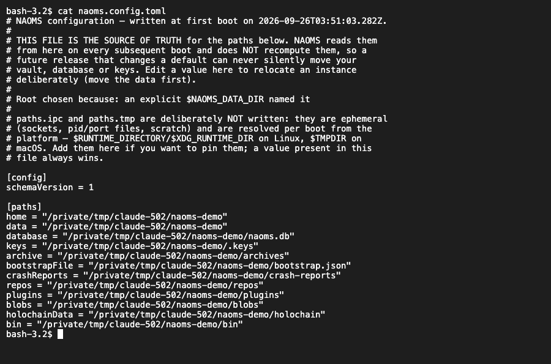
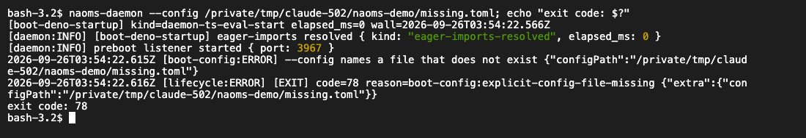
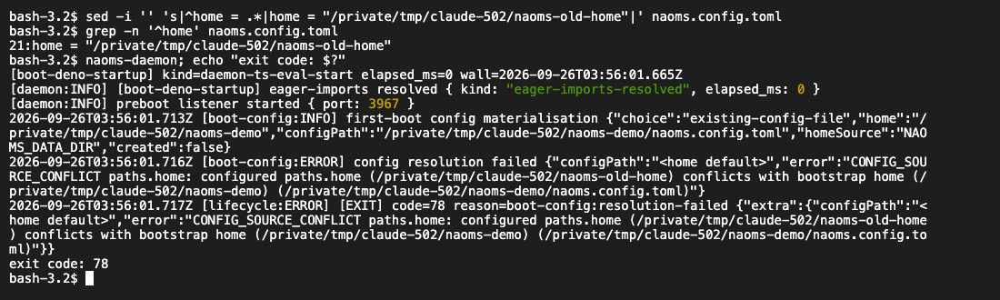

One file that says where everything lives
A NAOMS installation now writes a configuration file the first time it starts, and reads it on every start after that. Your data directories are decided once and written down, not recomputed on each start. An existing install is adopted where it already lives. A file that is broken or contradicts itself stops the start with a clear error, rather than letting it quietly carry on with the wrong settings.
Software that runs on your own machine has to answer a boring question before it can do anything interesting: where is my stuff? Where is the vault, where is the database, where are the keys. Get that wrong and the program doesn't crash. It starts up perfectly happily against an empty folder, reports that all is well, and shows you a system that has forgotten who you are.

For a long time NAOMS answered that question with environment variables: settings passed in by whatever started the program, scattered across scripts and shells. Forget one and you could end up running against the wrong vault. Now there is a better answer, and it sits in one file.
The file
Your NAOMS home folder now holds naoms.config.toml, a plain-text,
sectioned configuration file you can read and edit. The first time NAOMS starts,
it works out where everything should live and writes it down: home, data,
database, keys, archive, plugins, repositories, crash reports and the rest. From
then on it reads those locations from the file instead of recomputing them,
and it does not rewrite a file that already exists. The top of the file says in
a comment why that folder was chosen.
Two limits are deliberate. The folders for short-lived files (sockets, scratch space) are still worked out on each start, because nothing durable lives there; you can pin them in the file if you want. And if the file cannot be written at all — a read-only disk, say — NAOMS logs a loud error and starts the old way for that run, locating things from its environment as before, rather than refusing to start over a missing file.
Why "decide once" matters
This is the part worth taking away, whatever software you run.
If a program recomputes its data location every time it starts, then where your data lives depends on which version of the code you are running. Imagine a release that tidies up the default location on some platform — a perfectly reasonable change. Every existing install would boot against the new, empty location. Nothing would error. The system would look healthy and would have no identity, while your real vault sat untouched in the old place. The code names this as a silent change in its most expensive form.
Writing the answer down on first start turns that risk into an explicit choice. A later change to a default moves nobody whose file has been written. If a location ever genuinely has to change, that becomes a deliberate, versioned migration of the file, not a side effect of an upgrade.
Existing installs stay where they are
Installs that existed before this change keep their data in the older default folder, unless they were pointed somewhere else. Writing the new per-platform default for them would have orphaned all of it. So on first start NAOMS looks before it decides:
- If you named a location explicitly (with the
NAOMS_HOMEorNAOMS_DATA_DIRenvironment variable), that wins. - Otherwise, if the old folder already contains a vault, a database or keys, NAOMS adopts it as your home.
- Only a genuinely fresh machine gets the new platform default.
Whichever it picks is written into the file, so the decision happens once and does not drift later; changing it means editing the file yourself.
Overriding it, and what wins
Two new flags replace the old habit of setting an environment variable for one
run. The NAOMS background service accepts them, and so does the naoms command
(placed before the subcommand), which reads the same file but never writes one:
--config <path>points a run at a different configuration file. If that file doesn't exist, NAOMS refuses to start. It won't quietly fall back to the default file, because running on a configuration you didn't write is exactly the wrong-vault mistake this exists to prevent.--set <key>=<value>, which you can repeat, overrides a single value for one run. Unknown keys are refused, and so are keys that look like secrets.

When several sources disagree, the order is fixed. A --set value beats the
file named by --config, which beats the file in your home folder, which beats
the built-in default. For a setting that now belongs to the file, the old
environment variable is simply ignored: there is no hidden layer where a
forgotten variable in a shell profile quietly overrides what you wrote. A short
list of environment variables stays on purpose — the one that locates your home
folder in the first place, references to secrets, and the few that other
programs read before NAOMS's own code runs.
And if the file is malformed or contradicts itself — for example, if it names a different home folder from the one NAOMS was started in — NAOMS refuses to start and tells you why, rather than guessing.
Secrets are meant to stay out of the file. The file holds a reference that says where to find each secret, such as a named environment variable, and the value is looked up from there when it is needed.

Status
The --config and --set flags reached main on 21 September; writing the
file on first start, and the naoms command reading it, reached main on
22 September.
- This is the foundation, not the finished move. Locations are decided and read through the file, and settings already assigned to the file are read from it. Parts of the code base still read environment variables directly, and the move away from them is not finished.
- The inspection commands in the docs are not built yet. The reference page describes commands to validate the file, print it with secrets hidden, and explain where a value came from. Those commands don't exist in the codebase yet. Until they do, the file itself, and the error when it is wrong, are the interface.
- The work is still in progress, with no sign-off.
Related: install NAOMS: zero to first identity · losing a file should not cost you your identity
Written by AI agents from real project logs; owned and edited by Mujo.